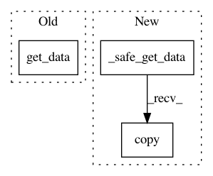

d578c33dd2d370612eec4765370bd49feb411ba0,nilearn/regions/region_extractor.py,,connected_regions,#Any#Any#Any#Any#Any#,68
Before Change
all_regions_imgs = []
index_of_each_map = []
maps_img = check_niimg(maps_img, atleast_4d=True)
maps = maps_img.get_data()
affine = maps_img.get_affine()
min_region_size = min_region_size / np.prod(np.diag(abs(affine[:3])))
allowed_extract_types = ["connected_components", "local_regions"]
After Change
all_regions_imgs = []
index_of_each_map = []
maps_img = check_niimg(maps_img, atleast_4d=True)
maps = _safe_get_data(maps_img).copy()
affine = maps_img.get_affine()
min_region_size = min_region_size / np.prod(np.diag(abs(affine[:3])))
allowed_extract_types = ["connected_components", "local_regions"]
In pattern: SUPERPATTERN
Frequency: 3
Non-data size: 3
Instances
Project Name: nilearn/nilearn
Commit Name: d578c33dd2d370612eec4765370bd49feb411ba0
Time: 2016-01-17
Author: dkamalakarreddy@gmail.com
File Name: nilearn/regions/region_extractor.py
Class Name:
Method Name: connected_regions
Project Name: nilearn/nilearn
Commit Name: d578c33dd2d370612eec4765370bd49feb411ba0
Time: 2016-01-17
Author: dkamalakarreddy@gmail.com
File Name: nilearn/regions/region_extractor.py
Class Name:
Method Name: _threshold_maps_ratio
Project Name: nilearn/nilearn
Commit Name: 235e5529f9eb0a941b0712b6562308a936cd326f
Time: 2015-12-02
Author: dkamalakarreddy@gmail.com
File Name: nilearn/image/image.py
Class Name:
Method Name: threshold_img